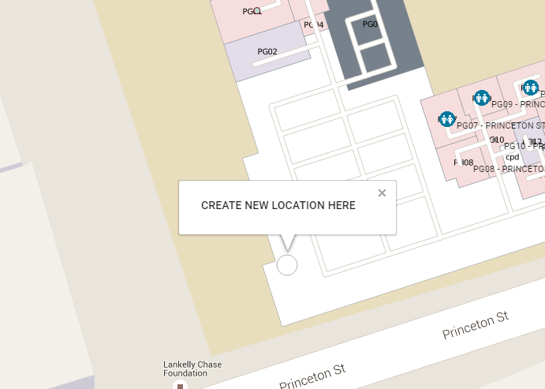
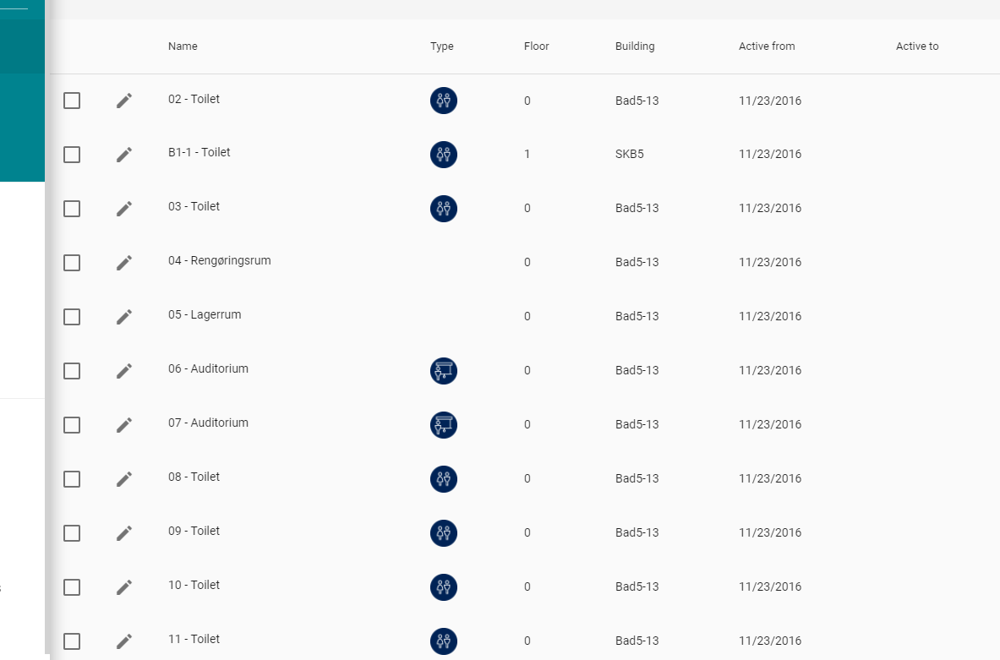
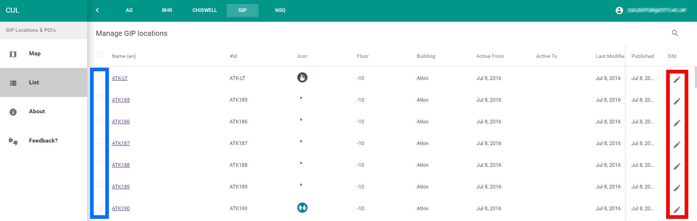
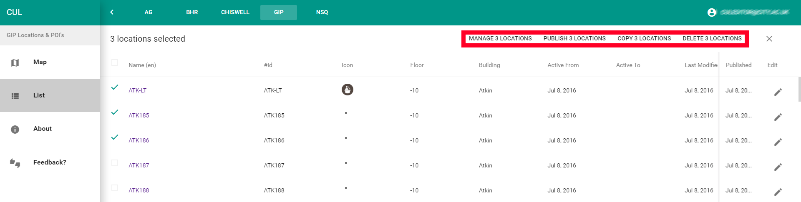
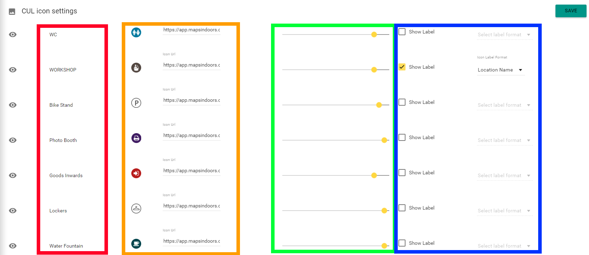
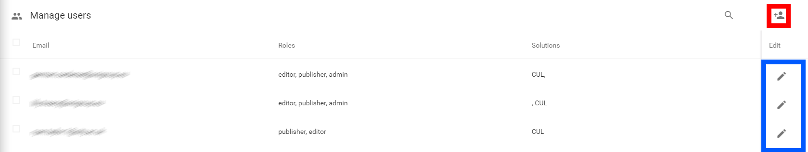

Guide to the MapsIndoors CMS
About the User Roles
There are 2 roles in the system:
Editor - Editors can create new locations, make changes to and remove existing locations
Admin - Administrators also have access to types, categories and users management, network visualisation and app configuration.
Regarding the transition to MapsIndoors CMS 3.0 If you are using the CMS to manage push messaging or beacons you have to continue using the previous CMS version. The same applies in the event of having unpublished changes in your CMS. Please publish them in the previous version before starting to use the new version. Editors roles of the previous CMS version will need to have their roles updated by an admin, on the “users” page before they can access the new CMS. Click here to access the previous CMS version .
Logging In
Visit cms.mapsindoors.com
Log in using a google account or by typing your email and password
Locations
After logging in, the map will appear. 
There are a number of key elements on the map:
Solutions: if you have access to more than one solution, you can change the active solution here.
Venues: if there are multiple venues in the current solution you can select the active one here.
Menu: navigate between the pages you have access to here. Pages that show content based on the selected venue are grouped first (teal background).
Toggle map or list: view locations on a map or display a list of locations.
Filter and search: search for locations and/or use one or more filters. Applies to both map and list.
Floor selector: change which floor is displayed on the map.
Building: all buildings belonging to the selected venue will be displayed on the map
User menu: change password or log out.
Creating a Location
To create a new location, click anywhere on the map - do not worry if the position is a bit off, it can be moved afterwards.
After clicking, the create form will open over the left side of the map.
Create/edit location form
1 - Translated texts:
Properties like name (required for default language), aliases, description and any custom defined values.
Aliases are alternative names used to match the location to searches.
2 - Type & Categories:
A location requires a type. Types define things like icon, template, label format and zoom levels the location is displayed at. Types are created and controlled elsewhere in the CMS - see more under Types
A location can belong to any number of categories. - see more under Categories
3 - Location:
Building, floor and Room ID (if applicable) can be set here. Building and floor will be set automatically but you should always verify that these properties are correct.
**4 - **More:
Active from/to define when the location is displayed and searchable in the app(s).
5 - Image:
Upload an image or provide a link (https). If you link to content outside the MapsIndoors CMS we can not take responsibility for changes or availability.
Save changes
Remember to save before clicking on another location or changing the page, otherwise your changes will be lost. To save the changes, press the “Save”-button in the top of the location edit form.
List
As previously mentioned you can toggle between map and list. Switching to list-view will present the locations in a table as shown below:
To edit a location, click the pencil
To edit multiple locations, tick each one
Once locations are selected, a new toolbar appears:

**Edit **opens a menu with some of the properties also seen when editing one location.
Delete deletes all the selected locations (a prompt will open to ensure a delete is requested).
Types
At the types page you can manage the different types of locations.

The page is split in two views:
Preview map, this allows you to see the changes you make to viewing distance, visibility, icon and label format. The map should give a good indication of how the location is displayed in the end-user app.
Types table displaying the name, icon path, icon preview, viewing distance, label format and whether the type is visible.
Once a type has been created and saved, it will show up in the type selector, when creating or editing a location. Remember to save before leaving the page, or changes will be lost.
Categories
A location can belong to any number of categories. Once a category has been created it is selectable when creating or editing a location.

The category page shows the existing categories with all translations. Click the pencil to edit a category or “Add category” to create a new one. In both cases the edit panel opens:

You are required to fill in all languages. Google Translate is integrated to give you automatic suggestions filling in the name in one language.
Admin
Admin allows access to the following sections:
Network
App configuration
Users
Network
At this point the network page is really simple as it does not (yet) allow you to change anything but rather lets you see a visualisation of the underlying network that is used for navigation.

Display settings will allow you to select what to display. Currently only entry points and doors are available.
The path size controls how thick the lines are and can be useful when zooming in or out.
App configuration
This page contains basic settings for your standard app. If you do not use the standard app these settings can still be used for your tailored app but they are not required.

Use this module to set the title, primary color and secondary color. It is recommended to set the correct colors even though this will not yet(!) change the color in the app(s), as we will be updating the apps to use these colors in the near future.
Users
Here you can manage who has access to your content and with what access level.

If you manage multiple solutions you can filter users by solution or search for a specific user. Admin users have a shield icon next to their username (email)
Use the pencil to edit or delete an existing user.
When creating a user provide the following information:
Email: The user’s email address, this is used as a username
User Role: What role should be granted.
Content Access: Which Content should be accessible.

It is possible to create multiple users with the same role and access by typing multiple emails separated by “,” (comma). Once a user is created an email will be sent with a temporary password.
Glossary
Types: are used for various Locations on the map, e.g. POIs, Rooms. Having a unified representation for specific types of locations makes the system easier for users to engage with. The type defines the icon drawn on the map. Types are initially set via the data provided in the Datasheet
Location: A term used in the system for all Rooms and POI
POI: “Point of interest” - is usually an object that isn’t tied to a room. E.g. Vending Machine, Locker, A Statue, ATM etc.
RoomID: The number for the Room, more information can be found in the Datasheet
Https: This is needed for security and safety reasons.